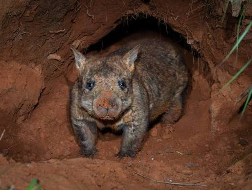

In the short term an extinction of the Northern Hairy Nosed Wombat would be a disaster for Australia's identity on the world stage
It would be a symptom of either a major climate diaster and or a failure of conservation efforts
On top of that an exctinction would greatly undermine the view on other conservation efforts
